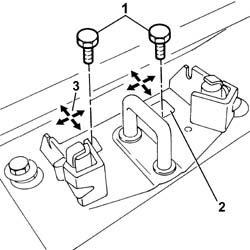

7015A10 TAILGATE - ADJUST STRIKER AND ADAPT SEAL IF NECESSARY
- Path
- Procedures > 70 FITTINGS > 7015 TAILGATE/FLAP > 7015A TAILGATE ASSEMBLY > 7015A10 TAILGATE - ADJUST STRIKER AND ADAPT SEAL IF NECESSARY
- Kind
- repair procedure (removal / refitting; the operation number is the code)
- Applies to
- all engines; all production periods
- Interactive page
- https://sloeber94.github.io/elrnDB-fUlss/en/#/179007686
Applies to: all engines; all production periods
Op. 7040B22 LUGGAGE COMPARTMENT/LOAD PLATFORM MOULDING - R+R
-
1. Loosen the bolts fixing the tailgate lock striker.
2. Adjust the position of the striker, making use of the slotted openings for the fixing bolts.
3. The arrows indicate the possible movements for the adjustment.

Applies to: all engines; all production periods
- When the adjustment has been completed, tighten the bolts fixing the tailgate lock striker to torque.
Op. 7040B22 LUGGAGE COMPARTMENT/LOAD PLATFORM MOULDING - R+R